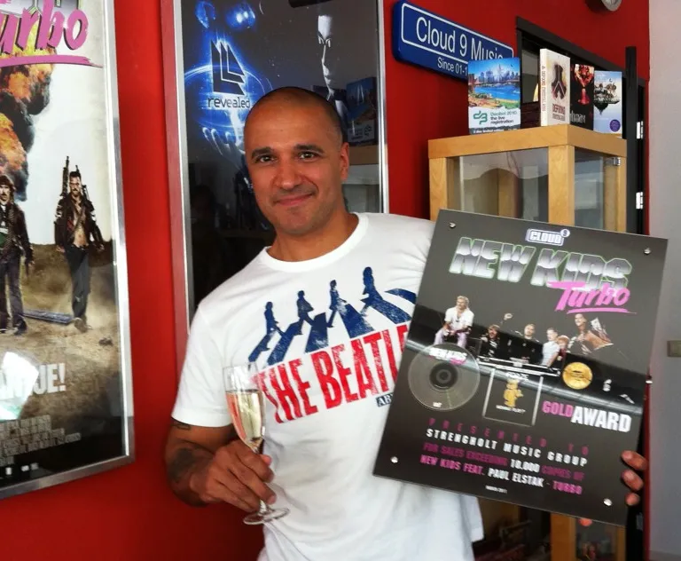
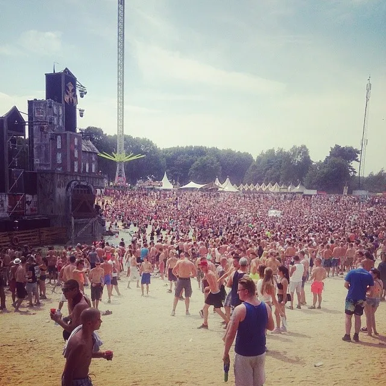
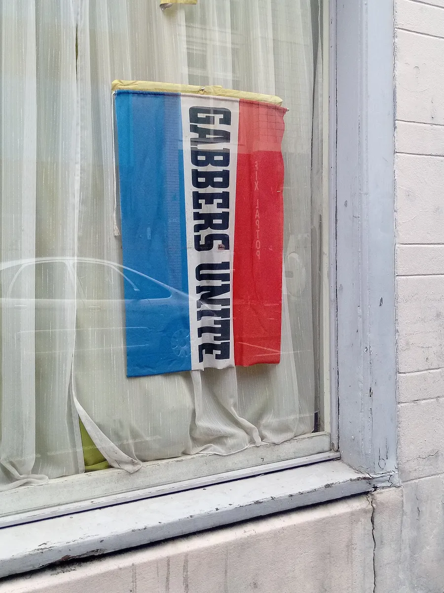
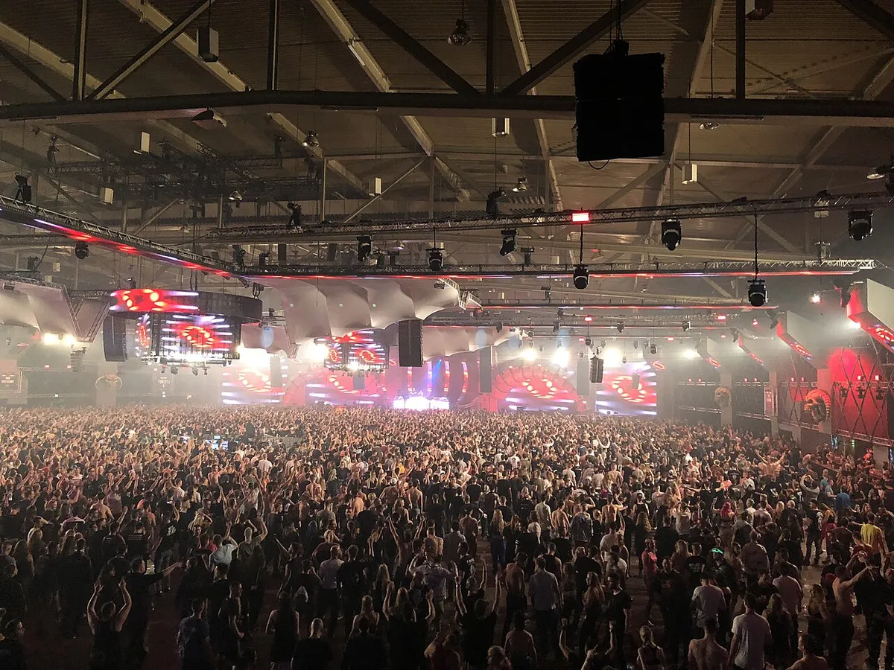
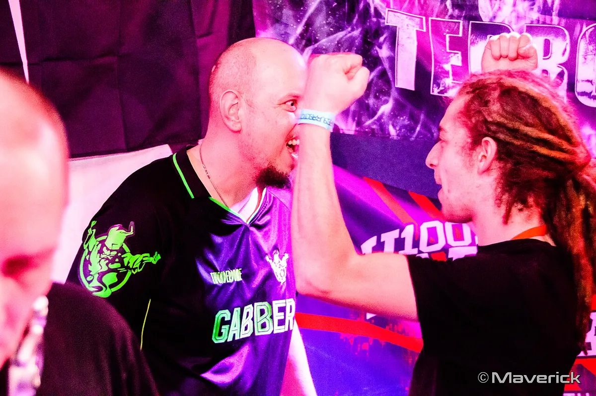
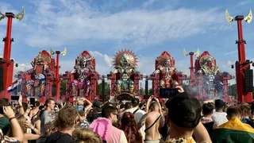
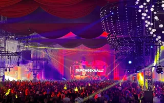
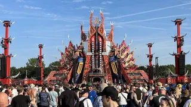

Gabber
What is gabber? Rotterdam hardcore, Thunderdome and happy hardcore
A distorted kick, a Rotterdam label and the biggest Dutch youth culture of the 1990s, with its brighter offshoot, happy hardcore.
Hardcore, and the Dutch sound inside it.
Gabber is the Dutch branch of a wider genre, hardcore techno music, which came together in the Netherlands, Belgium and Germany at the turn of the 1990s. Hardcore is the family name; gabber is the Rotterdam sound inside it, and for a few years in the mid-1990s it was the biggest youth movement in the country. Billboard called it the Netherlands' "first homegrown youth culture" in 1997.
Where gabber came from.
The groundwork was laid outside the Netherlands. In 1990 Marc Trauner, a producer from Frankfurt, released "We Have Arrived" as Mescalinum United, a record credited as the first hardcore techno track. Trauner had founded Planet Core Productions in 1989, and as Marc Acardipane he went on to produce hundreds of tracks under different names. Aphex Twin remixed "We Have Arrived". In Belgium, T99's "Anasthasia" (1991) supplied the swarming synth stab that hardcore records used for years afterwards; the 90s rave music guide covers that record and the Belgian scene around it.
In New York, Lenny Dee started Industrial Strength Records in 1991, the first label dedicated to hardcore. Rotterdam took those ingredients and sped them up. DJ Paul Elstak and DJ Rob (Rob Fabrie) played a faster, harder style with saturated bass lines, first at Parkzicht, a Rotterdam club, and then at the Energiehal. Elstak founded Rotterdam Records in 1992, the first hardcore label in the Netherlands.

Amsterdam had its own labels. Mokum Records was set up in 1993 by Freddy B and released Technohead, Tellurian, the Speedfreak and Scott Brown, the Scottish producer. Pengo Records was the other name that mattered in the early years. Between them, these labels and Industrial Strength in New York put out most of the gabber records that defined the first wave.
The word gabber.
Gabber comes from Bargoens, the old slang of Dutch traders and travellers, which took it from the Hebrew chaver through Yiddish. It means mate, or buddy. In Amsterdam it was used for the new crowd before they used it themselves, and not kindly.
The scene took the word back. When Rotterdam Records put out its first Euromasters record in 1992, Elstak etched a line into the vinyl: "Gabber zijn is geen schande!", it is no disgrace to be a gabber. Boiler Room used the same line as the title of a 2014 film about the scene. After that the word stood for the music, the parties and the people at them.
Thunderdome and the gabber parties.
The party that carried gabber across the Netherlands was Thunderdome. It was run by ID&T, an organisation founded by Irfan van Ewijk and Duncan Stutterheim after a large rave in Utrecht in 1992 called The Final Exam. The first Thunderdome took place in October 1992 in an ice-skating arena, with an octopus fairground ride set up among the crowd, according to the Guardian's history of the event.
The CD compilations made it a brand. ID&T released four Thunderdome albums in 1993 alone, each selling better than the last, and the parties grew into events for tens of thousands. The resident DJs were the Dreamteam: Dano, Buzz Fuzz, Gizmo and The Prophet. DJ Dano's "Welcome to the Thunderdome" became the party's theme.
Other hardcore techno songs from those years still open sets: The Prophet's "Alright Now Here We Go!", 3 Steps Ahead's "Drop It", Diss Reaction's "Jiiieehaaaa" and DJ Hooligan's "B.O.T.T.R.O.P.". 3 Steps Ahead was the project of Peter-Paul Pigmans, who died in 2003.
Thunderdome ran for about 20 years and wound up in 2012. In 2016 a plane trailing a banner announced its return, and the 2017 edition sold out in 30 minutes. The Guardian put the 2019 crowd in Utrecht at 50,000, a record for an indoor hardcore event, spread over six areas.
The scene was never only Dutch. Dead by Dawn ran at the 121 Centre in Brixton, south London, and in the American Midwest the Drop Bass Network put on hardcore raves through the 1990s. Belgium had its hardcore rooms too, and Thunderdome toured there, playing the Antwerp Sportpaleis.
The gabber look and hakken.
Gabber had a uniform: Australian tracksuits by L'Alpina (the wearers were called "Aussies"), Cavello and Nike Air Max on the feet, and shaved heads for men and many women. It was a working-class look, bought in sports shops rather than clothes shops, and it made a gabber visible from across a street.

The dance is hakken, a fast, stamping step done on the spot with the arms pumping, kept up at tempos where most dancing gives out. It is still the dance at hardcore events, and the name comes from the Dutch for hacking. A parody, Gabber Piet's "Hakke & Zage", became a hit on the back of the craze, which shows how far into the mainstream the culture had reached.
In the 2010s the look returned on fashion runways and in magazines. MasterClass credits Boiler Room with helping that revival along, and a 2023 documentary, Hardcore Never Dies, went back over the first generation.
Gabber against racism.
The shaved heads and bomber jackets led outsiders to read gabber as a far-right scene, and some far-right groups tried to recruit at the parties. The labels answered on record. Mokum Records adopted the slogan "Hardcore united against fascism and racism" and printed it on its releases.

Two Mokum records said it outright: "Chosen Anthem (Against Racism)" by DJ Chosen Few (MOK 8, 1993) and "Die Nazi Scum" by Party Animals featuring MC Rob Gee (MOK 54, 1996). Party Animals were also one of the acts that took gabber into the Dutch charts.
Rotterdam's scene had a Surinamese-Dutch figure at its centre: Paul Elstak, born in The Hague in 1966, is of Surinamese descent. In a 2019 interview with de Volkskrant he talked about his ancestors who had been enslaved.
Happy hardcore.
Happy hardcore music is the bright side of the same family. In Britain it split off from breakbeat hardcore in late 1992, when DJs such as Slipmatt, DJ Sy, Seduction, Clarkee, Dougal and Vibes kept the piano breaks, chipmunk vocals and major keys that others were dropping. It is also called 4-beat. Where gabber stays on a distorted four-on-the-floor kick, happy hardcore ran breakbeats alongside it, at about 170 BPM by Simon Reynolds's count, and later lost the breakbeats.
The British scene had its labels (Hectic, Homegrown, Kniteforce, Just Another Label) and its raves: Dreamscape, Helter Skelter and Fusion. Hixxy, Breeze, Force & Styles, Sharkey, DJ DNA and Kevin Energy were the names of the late 1990s. Pirate stations such as Dream FM and Eruption FM played it, and the Bonkers compilations on React sold it far beyond the raves. The British strain later became UK hardcore, and Hardcore Adrenaline and Happy 2b Hardcore kept the older sound going after 2007.
In the Netherlands, happy hardcore came out of gabber itself. Paul Elstak recorded it under his full name and kept the name DJ Paul for gabber. His "Rainbow in the Sky" (1995) is the record most people mean by Dutch happy hardcore, and in November 2025 he celebrated its 30 years with a show in Arnhem. Charly Lownoise and Mental Theo were the other big Dutch names.
Elstak never left the charts for long. He co-wrote and co-produced "Europapa" by Joost Klein, the Dutch entry for Eurovision in 2024, and in 2025 his "Luv U More" came back as a single with Scooter and Klein.
Gabber vs hardstyle.
Gabber and hardstyle both come from the Netherlands and both put the kick drum first, which is why they get confused. They belong to different decades. Gabber is early 1990s and hardcore, built on a kick so distorted it turns into a tone. Hardstyle came at the end of the 1990s as gabber faded, slower, around 145 to 155 BPM, with reverse bass and long melodic breakdowns. The hardstyle guide covers it, and Defqon.1, the festival that became its home, has its own page.
| Style | Where and when | Tempo | What to listen for |
|---|---|---|---|
| Gabber | Rotterdam and Amsterdam, early 1990s | 140 to 190 BPM | A kick distorted until it hums, relentless |
| Happy hardcore | Britain and the Netherlands, from 1992 | About 170 BPM | Pianos, high vocals, major keys |
| Hardstyle | The Netherlands, late 1990s | 145 to 155 BPM | Reverse bass, long melodic breakdowns |
| Frenchcore and uptempo | France and the Netherlands, 2010s | Over 200 BPM | Faster again, louder, often melodic |
The quickest way to tell them apart is speed and mood. A gabber record keeps hammering; a hardstyle record builds to a melody and drops back in.
Hardcore techno now.
By the late 1990s gabber had lost its place in the charts, and hardcore changed. In the early 2000s a slower, heavier style called mainstream hardcore took over in the Netherlands and Italy, with DJ Promo and his label The Third Movement, Endymion, Art of Fighters and The Stunned Guys. Labels such as Enzyme Records and Industrial Strength kept a darker, more industrial strain going, with artists like Ruffneck and The Outside Agency.

The 2010s took hardcore international. Angerfist entered the DJ Mag Top 100 at number 39 in 2011, and hardcore sets reached Electric Daisy Carnival in the United States. Around 2015 the scene sped up again: frenchcore, uptempo and terrorcore moved past 200 BPM, and Sefa and Dr. Peacock pushed a louder, more melodic style. Frenchcore traces back to the first French hardcore producers, Laurent Hô and Liza 'N' Eliaz among them.

Masters of Hardcore, a Dutch indoor event, now runs editions in Spain, Russia, Austria and Switzerland, and the hardcore techno artists at the top of the bill are Angerfist, Miss K8 and Drokz.
The older sound has a second life in clubs and on radio. In 2019 Boiler Room ran a series of Hard Dance nights, and Marc Acardipane played its New York edition under a "Spinoff Gabber" billing.
Lenny Dee, who started Industrial Strength in 1991, still plays. In September 2019 he went back to back with Frankie Bones at The Lot Radio in New York.
A younger generation plays gabber alongside other hard music rather than in its own room. Nkisi played Boiler Room's Hard Dance night in London the same year.
On Kiosk Radio, Paul Seul of the Casual Gabberz crew plays gabber and hardcore records.
Where to start with gabber.
For early gabber, the sound of Rotterdam, start with the records from the Thunderdome years: "Welcome to the Thunderdome", "Alright Now Here We Go!" and "Drop It", then go back to "We Have Arrived" to hear where it began. For happy hardcore, "Rainbow in the Sky" in the Dutch version, and in the British one the Bonkers compilations and tracks such as "Heart of Gold", "Pretty Green Eyes" and "Sunshine After the Rain".
For hardcore now, the large Dutch events are where it is played: Thunderdome, Masters of Hardcore and Dominator. For the older records played to a club crowd, the radio sets above are the place to start.
Gabber FAQ.
What is gabber music?
Gabber is a fast, distorted style of hardcore techno from Rotterdam and Amsterdam, from the early 1990s, usually between 140 and 190 BPM. It is built on an overdriven kick drum, and its parties, Thunderdome above all, made it the biggest Dutch youth culture of the decade.
What does gabber mean in Dutch?
It means mate or buddy. The word comes from Bargoens, an old Dutch slang, which took it from the Hebrew chaver through Yiddish. Paul Elstak etched "Gabber zijn is geen schande!", it is no disgrace to be a gabber, into the first Euromasters record in 1992.
What is the difference between gabber and hardstyle?
Gabber is early-1990s hardcore, usually 140 to 190 BPM, with a kick distorted until it hums. Hardstyle came at the end of the 1990s, around 145 to 155 BPM, with reverse bass and long melodic breakdowns. Gabber keeps hammering; hardstyle builds to a melody.
What is the most popular gabber song?
There is no chart that settles it, but DJ Dano's "Welcome to the Thunderdome" is the one most tied to the scene, as the theme of its biggest party. For happy hardcore, it is Paul Elstak's "Rainbow in the Sky" (1995).
Is gabber the same as hardcore techno?
Gabber is part of hardcore techno. Hardcore is the wider genre from the Netherlands, Belgium and Germany; gabber is its Dutch, early-1990s form. Frenchcore, uptempo and mainstream hardcore are later branches of the same family.
What is happy hardcore?
Happy hardcore is a bright, fast offshoot of hardcore with piano lines, high vocals and major keys. In Britain it split from breakbeat hardcore in late 1992; in the Netherlands it grew out of gabber, with Paul Elstak and Charly Lownoise and Mental Theo.
Sources.
Continue reading
Read next.

Music history~8 min readWhat Is Hardstyle? History, Sound, Artists and Subgenres
Reverse bass, distorted pitched kicks, the Dutch festival circuit and the split between euphoric and raw hardstyle.
Read article →
Festivals~7 min readAirbeat One Festival 2027: Dates, Stages, Camping and Travel
An airfield festival for EDM, techno, hardstyle and psytrance, with camping operating as part of the event.
Read article →
Festivals~8 min readDefqon.1 2027: Dates, Tickets, Sale Dates, Line-up
Defqon.1 2027: dates, how the ticket sales work, why 2026 was cancelled, where it is held, the stage colours and how to get there.
Read article → Music history~11 min read
Music history~11 min readGerman Electronic Music History: From Kraftwerk to Techno
Cologne studios, Düsseldorf electronic pop, Frankfurt trance and the Detroit-Berlin alliance.
Read article →Want something to play while you read? Let the Selector pick a DJ set.